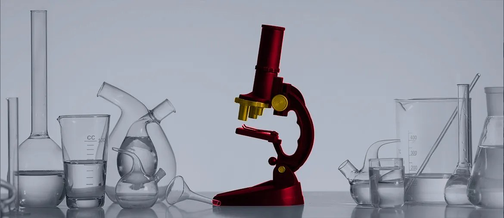

QA and Data Analytics in Pharma Industry
Elinext built validated testing around pharma data workflows, using MATLAB and Python to reduce manual checks.
Read the case studyBelmar already treats quality as part of the product. We would help turn that work into clearer data, faster evidence, and cleaner validation handoffs.
Why we are here: we saw the Quality Engineer hiring signal in Golden. It points to CAPA, validation, metrics, and production support pressure.
Quality systems, refill flow evidence, and leadership-ready reporting for a multi-site compounding operation.
Belmar is scaling quality work across 503A pharmacies, 503B outsourcing, and patient refill flows. The open Quality Engineer role points to CAPA, change control, validation, complaint response, and KPI load. The likely bottleneck is not effort. It is clean data and audit-ready evidence across tools and sites. If that stays manual, leaders wait longer for answers, and quality staff carry too much follow-up work.
Engagement model: a dedicated Elinext squad working under Belmar’s Product Owner, COO, or Quality lead. Stack fit: Python, .NET, Node.js, React, QA automation, and DevOps.
Trace CAPA, deviation, change control, validation, complaint, and refill events from source tools to final evidence.
Create a governed model for quality events, production issues, portal status, owners, dates, and required documents.
Add repeatable tests and alerts for missing fields, stale actions, failed handoffs, and validation evidence gaps.
Deliver a six-week pilot with weekly demos, one leadership dashboard, and an audit-ready handover pack.
Elinext is a full-cycle software development company, active since 1997, with about 700 in-house specialists and no freelancers. We are a fit when regulated teams need careful delivery, QA, validation support, and secure engineering. Elinext holds ISO 9001 and ISO 27001 certifications. Our named customers include Siemens, Broadcom, Volkswagen, TRUMPF, and TUI.
For Belmar, that means a disciplined squad that can support quality systems without adding noise to pharmacy operations.
Elinext built validated testing around pharma data workflows, using MATLAB and Python to reduce manual checks.
Read the case study
Elinext joined a pharma team to improve IT operations, CI/CD, security checks, and AWS cost control.
Read the case studyA short call can confirm the workflow, owners, and pilot scope.
Talk to Elinext